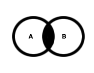

Lógica Matemática
Conceitos e História
A lógica matemática é uma subárea que desdobra-se na análise das proposições, a fim de verificar se uma afirmação é verdadeira ou falsa. Desse modo, ela se destaca na programação de computadores e em questões de vestibulares.
Quando surgiu por volta do século XIX, a lógica matemática era estudada independente da lógica, a qual teve bases no silogismo de Aristóteles, também aplicado ao raciocínio lógico. Segundo o filósofo, as premissas são juízos que antecedem a conclusão.
Durante a História Moderna acredita-se que René Descartes foi o primeiro filósofo a utilizar métodos algébricos como forma de exploração científica. Somente na Idade Contemporânea, a partir George Boole e Augustus de Morgan, foram apresentados os fundamentos da lógica algébrica.
Não precisa ler isso não xD- Negação: Tal operação corresponde ao lógico oposto da preposição "x", sendo chamado também não "não x". Deste modo, a expressão que era Verdadeira passa a ser Falsa.
- Conjunção: Essa operação é usada quando entre as preposições existe o conectivo "e". Essa operação será verdadeira apenas quando todas as preposições forem verdadeiras.
- Disjunção: O valor lógico dessa expressão será verdadeiro quando no mínimo uma das preposições for verdadeira. Portanto, o valor será falso apenas quando todas as expressões forem falsas.
- Condicional: O valor lógico dessa expressão será falso se a primeira preposição for verdadeira e a segunda falsa.
- Bicondicional: Nessa expressão, o valor lógico será verdadeiro se e somente se as duas ou mais preposições forem todas verdadeiras ou todas falsas, caso contrário, se houver uma preposição diferente, o valor lógico será falso.
- Existe: É um quantificador que faz referência a pelo menos um elemento pertencente ao conjunto. Basta apenas um existir.
- Para todo(Universal): Quantificador utilizado quando queremos nos referir a todos os elementos de um conjunto. Não pode haver exceções.
Operações Lógicas e significados.
Sinais Lógicos
Sinais, uns símbolos doidos e exemplos em português:
-
Clique nas letras/palavras que estão sublinhadas para ver as dicas.
- Negação: ' ou ~ ou ¬ ou !. Exemplo: A: azul é minha cor preferida; A': azul não é minha cor preferida
- Conjunção: ^. Exemplo: João gosta de andar de bicicleta e correr aos fins de semana.
- Disjunção: v. Exemplo: João anda de bicicleta ou corre aos fins de semana.
- Condicional: →. Exemplo: Se Pedro é médico então seu irmão é engenheiro.
- Bicondicional: ↔. Exemplo: O irmão de Pedro é dentista se e somente se Pedro for médico.
- Existe: ∃. Exemplo: Um ônibus escolar fará o trajeto até a praia se pelo menos um aluno for.
- Para todo: ∀. Exemplo: Todo número natural par é múltiplo de 2.
Sinais e exemplos em expressões lógicas:
- Negação:
- Conjunção:

- Disjunção:
- Condicional:
- Bicondicional:
Números Binários
Primeiro, uma introdução sobre os número binários:
Pode pular isso aqui e só ver como fazer cálculos com números binários :(
- Os números binários indicam a capacidade de dados.
- Na informática, um número binário (0 ou 1) equivale a 1 bit, a menor unidade de informação/armazenamento. Desse modo, 8 dígitos binários formam 1 byte. Um gigabyte é formado, aproxidamente, por 8.5 bilhões de zeros e uns :D
Agora, vamos aos exemplos:
- Vamos tentar explicar como o computador utiliza o sistema binário para ler informações(Sim, seu computador fala em linguagem "binária" :D)
- Para começar, usaremos o número 34 como exemplo.
- 34 é um número decimal, simples, o básico e fácil de entender. Agora, a base binária, assim como a decimal, é capaz de simbolizar todos os números possíveis
e imagináveis. Entretanto, contudo e todavia, ao contrário da forma normal(34), o sistema binário utiliza apenas dos símoblos 0 e 1. No caso, 31 se escreve 11111, assim como 17 é 10001 e 20 é 10100(mas que po*** é essa?).
- Para saber como escrever um número decimal em base binária, basta você utilizar a propriedade (mod) que vocês verão com o Daibert, ou será com o Waldir? Não lembro...
- 34 (mod) 2 resta 0 (ps: o número binário começa a partir do primeiro 1, se eu não me engano.)
- 17 (mod) 2 resta 1
- 8 (mod) 2 resta 0
- 4 (mod) 2 resta 0
- 2 (mod) 2 resta 0
- 1 (mod) 2 resta 1
- E sim, é assim com TODOS os números
- Agora escreva de cima para baixo e deu o número >:D.
Agora veremos como o computador entende essa linguagem.
- A pergunta é, como? Como o computador que eu tenho roda o meu Mine ou o meu LoL?
- Simplesmente com instruções de sim(1), não (0), ligado(sim) e desligado(não).
- Assim como a língua portuguesa, que usamos para nos comunicar, a codificação binária também tem sintaxes e semânticas características que permitem a humanos e computadores “conversarem”. Isso é a linguagem de programação, uma interface que facilita os humanos acessarem e controlarem tarefas executadas por circuitos eletrônicos.
- Desse modo, o profissional responsável por escrever os códigos por meio das linguagens é o programador. Sim, você mesmo que está lendo isso.
- Parece complexo né? E é mesmo, portanto se atente às aulas para que você não fique tão perdido para fazer como nós ficamos para criar tudo isso!!
Teoria dos Conjuntos
Vamos escrever esse aqui de forma mais séria porque é um assunto importante.
Diagrama de Venn
No modelo de Diagrama de Euler-Venn (Diagrama de Venn), os conjuntos são representados graficamente:
Relação de Pertinência
A relação de pertinência é um conceito muito importante na "Teoria dos Conjuntos". Ela indica se o elemento pertence (e) ou não pertence (ɇ) ao determinado conjunto, por exemplo: D = {w,x,y,z}
w e D (w pertence ao conjunto D) j ɇ D (j não pertence ao conjunto D)
Relação de Inclusão
A relação de inclusão aponta se tal conjunto está contido (C), não está contido (Ȼ) ou se um conjunto contém o outro (Ɔ), por exemplo:
- A = {a,e,i,o,u}
- B = {a,e,i,o,u,m,n,o}
- C = {p,q,r,s,t}
- A C B (A está contido em B, ou seja, todos os elementos de A estão em B)
- C Ȼ B (C não está contido em B, na medida em que os elementos do conjuntos são diferentes)
- B Ɔ A (B contém A, onde os elementos de A estão em B)
Conjunto Vazio
O conjunto vazio é o conjunto em que não há elementos; é representado por duas chaves { } ou pelo símbolo Ø. Note que o conjunto vazio está contido (C) em todos os conjuntos.
União, Intersecção e Diferença entre Conjuntos
A união dos conjuntos, representada pela letra (U), corresponde a união dos elementos de dois conjuntos, por exemplo:
- A = {a,e,i,o,u}
- B = {1,2,3,4}
- AB = {a,e,i,o,u,1,2,3,4}
A intersecção dos conjuntos, representada pelo símbolo (∩), corresponde aos elementos em comum de dois conjuntos, por exemplo:
- C = {a, b, c, d, e} ∩ D = {b, c, d}
- CD = {b, c, d}
- 
A diferença entre conjuntos corresponde ao conjunto de elementos que estão no primeiro conjunto, e não aparecem no segundo, por exemplo:
- A = {a, b, c, d, e} - B={b, c, d}
- A-B = {a,e}
Igualdade de Conjuntos
Na igualdade dos conjuntos, os elementos de dois conjuntos são idênticos, por exemplo nos conjuntos A e B:
- A = {1,2,3,4,5}
- B = {3,5,4,1,2}
- A = B (A igual a B).